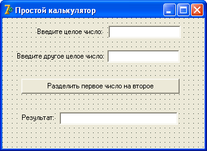

Вещественные числа
Как мы уже говорили раньше, вещественные числа – это числа с запятой, после которой идут десятичные значения.
Еще говорят, что они имеют плавающую точку (запомните это определение, оно будет часто встречаться).
Некоторые начинающие программисты считают, что лучше такой тип переменных использовать всегда, даже при обработке целых чисел.
Это большое заблуждение!
Операции над числами с плавающей точкой отнимают у процессора гораздо больше времени, и требуют больше памяти.
Компьютер воспринимает вещественное число, как два целых, и делает двойную работу при обработке чисел до запятой, и после нее.
Однако иной раз бывает необходимо использовать именно такой тип данных.
К примеру, если нужно поделить одно целое на другое.
Хорошо, если это будет "4/2", результат тоже будет целым – 2.
А если "4/3"?
Тогда результатом будет 1,3333… и уж тут без вещественного числа не обойтись!
А ведь мы заранее не знаем, какие числа будет делить пользователь, поэтому лучше сразу иметь в виду, что результат может быть не целым числом.
Как и целые, вещественные числа имеют несколько типов.
Тип Real48
Диапазон возможных значений: 2.9 * 10^(-39) .. 1.7 * 10^(38)
Значащих цифр максимально: 11-12
Размер в байтах: 6
Тип Real
Диапазон возможных значений: 5.0 * 10^(-324) .. 1.7 * 10^(308)
Значащих цифр максимально: 15-16
Размер в байтах: 8
Тип Single
Диапазон возможных значений: 1.5 * 10^(-45) .. 3.4 * 10^(38)
Значащих цифр максимально: 7-8 4
Тип Double
Диапазон возможных значений: 5.0 * 10^(-324) .. 1.7 * 10^(308)
Значащих цифр максимально: 15-16
Размер в байтах: 8
Тип Extended
Диапазон возможных значений: 3.6 * 10^(-4951) .. 1.1 * 10(4932)
Значащих цифр максимально: 19-20
Размер в байтах: 10
Тип Comp
Диапазон возможных значений: -2^(63)+1 .. 2^(63)-1
Значащих цифр максимально: 19-20
Размер в байтах: 8
Тип Currency
Диапазон возможных значений: -922337203685477.5808 .. 922337203685477.5807
Значащих цифр максимально: 19-20
Размер в байтах: 8
Третий столбец таблицы указывает количество максимально значащих цифр.
Цифры, которые выходят за этот предел, будут игнорироваться.
Тут важно помнить, что вещественные числа не равны целым.
То есть, число 3,0 не будет равно 3!
Чтобы сравнить оба эти числа, придется округлить вещественное число.
Изучим целые и вещественные типы на практике.
Для этого создадим простую программу, которая делит одно целое число на другое.
Результат будет выводиться, как вещественное число.
Откройте Delphi, создайте новый проект.
На форму нужно поместить три компонента Label, три компонента Edit и одну кнопку, чтобы получилась такая картина:
Совет: чтобы выполнить одинаковую операцию над несколькими компонентами сразу, их можно выделить один за другим, удерживая клавишу <Shift>.
Например, если таким образом выделить все три компонента Edit, то затем можно разом очистить их свойство Text.
Сохраните проект под именем MyCalc.
Затем дважды щелкните по кнопке, чтобы создать обработчик нажатия на кнопку.
Перед begin процедуры следует создать раздел var, и объявить там три переменных:
var Perem1, Perem2 : Integer; Perem3 : Double;
Затем вернемся в тело процедуры (между командами begin и end ), и присвоим целым переменным введенные пользователем значения.
Здесь нужно понять одну важную вещь.
Пользователь будет вводить значения в компоненты Edit, и там они будут храниться в свойстве Text в виде строкового типа данных.
Строку нельзя будет присвоить переменной какого-либо другого типа данных, присвоение
Perem1 := Edit1.Text; //ошибочное присвоение
//– несовместимость типов данных
будет ошибочным.
Разница довольно существенная: даже если пользователь вводит, казалось бы, целое число, например,
123
то компьютер видит строку символов, а вовсе не число:
'123'
Решение – преобразовать один тип данных в другой, в нашем случае, строку в целый тип.
Преобразованием типов приходится заниматься сплошь и рядом, по мере изучения материала мы будем знакомиться с различными способами преобразования.
Преобразовать строку в целый тип можно с помощью функции
StrToInt(String);
В качестве параметра (в скобках) указывается строка.
Функция преобразует ее в целое число и вернет его как результат.
Примеры использования функции (эти примеры не нужно вводить в редактор кода):
var
s: String;
i: Integer;
begin
s := '1234';
i := StrToInt(s); //параметр – строковая переменная
i := StrToInt('123456'); //параметр – строка
i := StrToInt(Edit1.Text); //параметр – свойство Text
//компонента Edit, имеющее строковый тип
end;
Как видно из примера, имеется масса возможностей передать в функцию строку.
В первом случае преобразования мы передаем строковую переменную s, в которой хранится строка '1234'.
Функция преобразует эту строку в целое число, и в результате в переменную i попадет уже число 1234.
Во втором случае мы передаем непосредственно строку '123456', а в переменную i попадает преобразованное из этой строки число.
В третьем случае мы в качестве параметра передаем тот текст, который пользователь ввел в поле ввода Edit1.
Здесь следует сделать оговорку.
Функция сработает правильно, если пользователь ввел туда действительно целое число.
В противном случае возникнет ошибка.
Пользователь – личность непредсказуемая, поэтому программист в таких случаях перед преобразованием типов всегда делает проверку – а действительно ли в поле ввода имеются только цифры от 0 до 9?
Нет ли там случайно буквы или запятой?
Такую проверку мы научимся делать позднее.
Пока что придется самим следить, чтобы в этих полях ввода были только целые числа.
Вернемся к программе.
Сразу после begin присваиваем целым переменным значения, которые ввел пользователь:
Perem1 := StrToInt(Edit1.Text); Perem2 := StrToInt(Edit2.Text);
В третью, вещественную переменную, мы должны записать результат деления первого числа на второе.
Тут может крыться еще один "подводный камень" - что, если во второе поле пользователь ввел число 0?
Еще со школы все мы знаем, что на ноль делить нельзя.
Если же мы попробуем это сделать, то компьютер, в лучшем случае, зависнет.
Здесь опять придется делать проверку на правильность введенных данных, ставить, как говорят, "защиту от дураков".
Подробнее о таких проверках мы поговорим на следующих лекциях, когда изучим условные конструкции.
А пока просто наберите этот код:
{защита от дураков:}
If Perem2 = 0 then begin //если это ноль, то:
ShowMessage('На ноль делить нельзя!'); //выводит сообщение
Edit3.Text := '0'; //как результат записываем ноль
end
else begin //иначе:
Perem3 := Perem1 / Perem2; //делим
Edit3.Text := FloatToStr(Perem3); //преобразуем вещественное в
//строку и записываем результат
end;
Здесь следует обратить внимание на предпоследнюю строку.
Функция FloatToStr() в качестве параметра принимает вещественное число, и возвращает это же число в виде строки.
Например, в результате преобразования
s := FloatToStr(123.45);
переменной s будет присвоена строка '123.45', которую затем уже можно будет вывести пользователю в качестве результата.
В нашем примере мы результат деления двух целых чисел преобразуем в строку и выводим его в поле Edit3.
Справедливости ради следует заметить, что в качестве параметра можно передавать не только значение, но и выражение.
Например, если указать
Edit3.Text := FloatToStr(Perem1 / Perem2);
то надобность в использовании вещественной переменной Perem3 отпадает.
Попробуйте, как работают оба варианта.